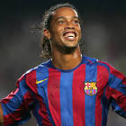

|  | Ronaldinho |
| Gender | Male |
| Ethnic | Brazilian |
| Job | Brazilian Footballer |
| Desc | There isn’t a single player who burned quite as brightly as Ronaldinho for such a short amount of time. Between 2004 and 2007, the former Milan and Barcelona man was at the top of his game and firmly established himself as the best player in the world, bar none. Ever sine he disappeared from the limelight, there hasn’t been another player who can put a smile on the faces of supporters quite like Ronaldinho did |
Affiliation
| Org | Brazil National Team |
| Club as Player | Barcelona FC |
Affiliation
| Brother | Roberto Assis |
| Agent | Roberto Assis |
2007 02 Retrieve
[Ronaldhinho on Steven Gerrard] Cristiano is a great player. But Steven Gerrard is, for me, one of the very best in the world. For the job he performs, for me, he is one of the greatest
2013 11 05 Retrieve
[Ronaldinho on Paul Scholes] I want to pass like him. Who taught him how to do that?
2014 07 11 Retrieve
[Brazilian legend Ronaldinho on Mesut Ozil] Germany has many great technical players. For example, Mesut Ozil. He plays like a Brazilian. You Germans no longer make your players mechanically, not squeezed it into a concept, but let them play football
2015 07 11 Retrieve
[Ronaldinho on who he would pick to play alongside in his ideal 5-a-side team] Happy people with amazing dribbling skills: Denilson, Neymar, Messi and Ronaldo Nazario. They’re all guys who play with joy and like to take on their man, and that’s what makes football so beautiful. Who is the most skilful in my team? Oh, that’s complicated. Each of them is very good and has done important things in football. However, I can say that if it was a foot-volley challenge against me, none of them would win!
2015 08 20 Retrieve
[Ronaldinho on Thierry Henry] Thierry Henry is a beautiful player and has got complete technique, I adore watching him. I respect him very much as a man and as a footballer. He reminds me of myself
2016 01 23 Retrieve
[Ronaldinho on his decision to continue his playing days; that is, after a little rest and relaxation during carnival back in Brazil] There is a lot to come in 2016. I’ll decide what to do next after carnival. For now, I plan to travel the world to promote football but now is not the time to stop. I will play for a little longer
2016 02 17 Retrieve
[Quote on Roberto Carlos] Would be worth having in any team for his ability to take free kicks, but as well as being one of the best free kick takers ever, he is also one of the finest left backs ever. So important to all of Real Madrid’s Champions League wins
2016 09 09 Retrieve
[Ronaldinho hints he may soon hang up his boots] I’m old. I’m 36 years old, I’m not 26 anymore and I’m looking at what I want to do when I finish my career. The idea is to play for another year. I’m involved in new projects, related to music and football. As you know, they’re my two great passions. It was a dream life. I won everything
2016 10 08 Retrieve
[Ronaldinho discusses his one career regret] I’ve achieved everything I wanted to and I’m grateful for that. Of course, I would have loved to have played more with [Lionel] Messi, he’s a great player and I’m very glad to have helped him at the beginning of his career with the assist for his first goal. Messi is a great player and the Argentina national team is a great team, I believe they have a real chance of winning the next World Cup. He demonstrates that he’s the best every day. Week-in-week-out he keeps playing at such a level that demonstrates how good he really is, so there’s no real need for him to show any more at the World Cup. But as my friend I always wish him the best as I do all of my friends
2016 10 28 Retrieve
[Quote on Frank Rijkaard the manager] He is one of the best (coaches) in the world and he deserves to be with a top team. [. . .] He always got the best out of me because I knew he knew what I needed. His experience on the pitch counts for every player he coaches
2017 01 14 Retrieve
[Ronaldinho writes a letter to his younger self] You are smiling because football is fun. Why would you be serious? Your goal is to spread joy. I’ll say it again - creativity over calculation
2017 02 04 Retrieve
[Ronaldinho says he would have liked to score Alli’s goal against Crystal Palace] I saw Dele Alli’s goal last year and it looked like a goal I would like to score - there is just no explanation for goals like that. It’s thrilling to inspire someone to score such a great goal; I can barely put it into words
2017 03 08 Retrieve
[Quotes on John Terry] The toughest opponents for me are the defenders who are tough in the way they play, where you can’t see a way through. Paolo Maldini and John Terry are two of the toughest men I have met on the field
2017 08 12 Retrieve
[Ronaldinho gives his reaction to Neymar’s record transfer to Paris Saint-Germain] May he keep enjoying himself and giving joy to those that like football, independent of the club he’s at … I am happy for him. He is our biggest idol in Brazil right now because we love his style of play
2017 09 09 Retrieve
[Ronaldinho shares insight on Philippe Coutinho and says he thinks his former club Barcelona will sign the player in the future] This season, they will see him give everything for the club - that is the sort of player he is. Also no player is going to refuse to play when it’s the World Cup at the end of the season. The Liverpool fans have nothing to worry about - I do not believe any of the stories about him refusing to play for the club. I know him, that is not his way. He [Coutinho] made it clear that he wanted to join Barcelona this summer - he will be disappointed, as it is a dream for players to want to play for Barcelona - but I am sure he will still get that chance. They made it clear how much they wanted him and I am sure that they will come back for him
2017 11 18 Retrieve
[Ronaldinho thinks the five-time World Cup winners are back to their best] I believe Jogo Bonito is back but more importantly the happiness and confidence is back for the players. The environment that Tite has made for them to be creative, to express themselves and to do what they like is the most important factor for getting confidence back in this team
2018 01 20 Retrieve
[Ronaldinho writes a farewell message after his retirement from football was confirmed this week] Thank you, my God, for this life you gave me, family, friends and my first profession. After almost three decades dedicated to football, I say goodbye to my biggest dream, dream come true. I did what I most loved professionally for 20 years, and ten as a basic training. I lived intensely this dream of children, every moment, trips, victories, defeats, the review, national anthem, the walk in the tunnel, dressing room, field entrance, the soccer shoes I used, the good and bad balls, tributes I won, the stars that I played, those that admired and played and those that only played in the play, but I admire until today!
2018 03 24 Retrieve
[Ronaldinho responds to a question about his potential to become a coach one day] No, it’s not for me. [Laughs] That’s not for me. I’m going to make music, I’m going to do my second passion. Enjoy time with my friends. But I do not see myself as a coach, working with football … I do not see myself like that
2018 03 31 Retrieve
[Ronaldinho talks about his childhood footballing idols] My brother Assis, Rivelino, Romario, Ronaldo, Rivaldo. Diego Maradona was special, too. I always enjoyed watching him, including everything he did even before the matches. He was the most playful; the one I liked the most in that sense of playing with the ball. Maradona could dribble at speed towards the goal. He had such a different technique from everyone else. I couldn’t do keepy-uppies with oranges like he did, though - my mother didn’t want me to waste food!
2018 04 14 Retrieve
[Ronaldinho speaks about Lionel Messi] We just have to cross our fingers and hope that someone comes along with half of his ability. That would already be enough. I will never get tired of eulogising about Leo. He’s not just a great player; he’s a great person, a great human being. That’s the kind of thing we must never tire of praising. And when he gets on that field … well, then we could end up speaking for a whole year about Messi. He evolves with every game. Leo is a living legend and we must treat him with so much respect
: 2019 06 26 Alexander Hleb says Barcelona sold Ronaldinho and Deco to protect Lionel Messi because the pair would often turn up to training drunk
2019 06 26b Retrieve
[Two years after his departure, Ronaldinho wrote an open letter to everyone connected to the club, professing his love for the Blaugrana] As you all know, I don’t normally talk in public a lot and I’m not one for big farewells, but I would like to take advantage of this occasion to thank you all for everything we shared together during the five years I defended the Barca shirt. They were certainly the best years of my life, both professionally and personally. I honestly think we enjoyed so much whilst we were together
2019 09 06 Retrieve
[Ronaldinho named Brazil’s tourism ambassador despite passport hold] Tourism is very important for generating jobs and regaining our image internationally
2019 09 06b Retrieve
[The 2005 Ballon d’Or winner has been praised for voluntarily taking on the new role by Brazilian Institute of Tourism’s Director of Marketing and Public Relations, Osvaldo Matos de Melo Junior] You take the case of Ronaldinho, a person who has almost 100 million followers in his networks and voluntarily helps us at no cost for patriotism. This attitude is invaluable. Just by issuing a visa to countries like the United States and Canada, we have already had over 200 per cent increase in demand for our country. We will increasingly invest, even in intelligence, to achieve our goals
2019 10 19 Retrieve
[Ronaldinho backs Vinicius Junior to be among the elite in world football] [Vinicius] is already at one of the best clubs in the world. I think he will soon be there, among the best
2019 12 07 Retrieve
[Ronaldinho wants Neymar back at Barcelona to reform ‘MSN’ with Messi & Suarez] I like my friends to be happy no matter where they are. But it is logical that I would love to see him again at Barcelona with Suarez, Messi. Together they did amazing things. Without a doubt, Neymar is our biggest idol in Brazil today. I love his style of play. Whenever I have a chance to see him play, it does me good. I hope everything goes well for him
[Ronaldinho admitting that few could have predicted that Messi would go on to become a six-time Ballon d’Or winner and all-time great] It was very difficult to know because he was very young but everyone already said that in the lower categories of Barca there was a very talented young man. Then we met and started playing together. For me, it is a matter of great pride to have participated in the beginning of his career
[Quizzed on whether he ever gave Messi any advice] No, he already knew what to do. We have always talked from friend to friend. Thank God, we still get along very well
2019 12 13 Retrieve
[Ronaldinho says Barcelona ace Lionel Messi can only be qualified as the best player of his generation] I can’t say that Messi is the best ever, but he is the best in his time. I don’t like comparisons because it’s hard to identify who the best in history is, there’s Diego Maradona, Pele, Ronaldo
2020 01 17 Retrieve
[Ronaldinho believes Lionel Messi didn’t need anything from him while he was breaking through at Barcelona] When I arrived at Barcelona, there was already talk of a kid [Messi] who stood out. Then we were friends; we started playing together and we got on very well. He arrived being different to all the others, and we spoke with [Frank] Rijkaard so that he came to train with us - it was all very fast. I was lucky enough to give him the pass for his first goal. Over time, it’s very nice to see someone who starts out so close [to you] and then conquers the world. We were always very close. We learned things, he taught me Spanish and I taught him Portuguese, but with the ball we understood each other perfectly. I’d be left amazed by how calm he is. That’s something I love about him; he never gets into trouble, he’s always with his family and those closest to him. Leo has everything, he didn’t need anything from me
[Ronaldinho declares Rijkaard was the best manager he played for during his distinguished career] He’s a great coach, a very quiet guy, the best I’ve ever worked with. He knew everything because he played at the highest level, and that made things easy for us. Everything he asked us to do, he has already done it before, so he spoke to us in a very simple and direct way. He gave me a lot of freedom to play my football. When we didn’t have the ball, we also had to fulfil our obligations. But when we had it, he made me feel completely free
2020 01 27 Retrieve
[Ronaldinho very excited about new Arsenal sensation because Martinelli reminds him of Ronaldo] We as Brazilians are very excited about him and his future. It is one thing to have the talent - but another at the age of 18 to have the confidence. He reminds me of Ronaldo his first season in Europe he scored 30 goals and people were thinking: ‘who is this 18 year old Brazilian kid?’ He wanted the ball, he would run at players, there was no fear no matter what players or team he was playing against - and I see that similar attitude in Martinelli. He just wants to be on the ball and score goals. Ronaldo went on to be the best player in the world - and that can also be the aim of Martinelli
[But Ronaldinho insists that he will be in coach Tite’s plans before too long] I am sure that his first Brazil cap is very close - he is ready. Historically the national team has never been concerned with age. Ronaldo was playing for Brazil at 17 - and more recently Neymar and Jesus have played an important role when they were only teenagers. If you have the ability and the talent then you will get the chance - and the world can see that he (Martinelli) has the talent
2020 03 05 Retrieve
[Ronaldinho said at his unveiling as an ambassador to promote Brazil’s tourism] Tourism is very important for generating jobs and regaining our image internationally
2020 04 03 Retrieve
[Ronaldinho has said that he sees similarities between Martinelli and legendary Brazilian striker Ronaldo] He reminds me of Ronaldo his first season in Europe he scored 30 goals and people were thinking: ‘who is this 18 year old Brazilian kid?’
2020 04 27 Retrieve
[Ronaldinho gives first interview since being arrested in Paraguay] We were totally surprised to learn that the documents were not legal. Since then our intention has been to collaborate with the justice system to clarify the facts. From that moment until today, we have explained everything and facilitated everything that has been requested of us. It was a hard blow, I never imagined that I would go through such a situation. All my life I have sought to reach the highest professional level and bring joy to people with my football
The warmth, affection and respect of all Paraguayans has been felt from the first day I arrived in the country until today, and I am very grateful. I have my faith. I always pray for things to go well and hopefully this will be over soon
The first thing will be to give a big kiss to my mother who has lived through these difficult days since the start of the Covid-19 pandemic in her home, then it will be to absorb the impact that this situation has generated and move forward with faith and strength
2020 05 06 Retrieve
[Ronaldinho has been in the news of late after he and his brother Roberto Assis were arrested in Paraguay in early March for allegedly using fake documents to enter the country] We were totally surprised to learn that the documents were not legal. Since then our intention has been to collaborate with the justice system to clarify the facts. From that moment until today, we have explained everything and facilitated everything that has been requested of us. Speaking of the moment he was told he was going to jail, Ronaldinho said: It was a hard blow, I never imagined that I would go through such a situation. All my life I have sought to reach the highest professional level and bring joy to people with my football